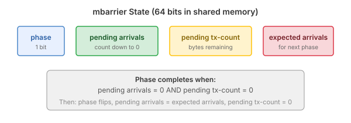
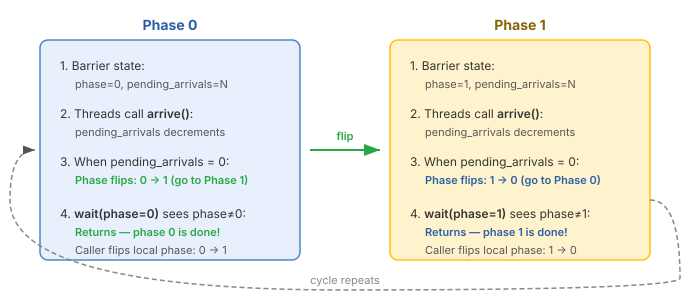

Script.mbarrier¶
What is an mbarrier?¶
An mbarrier (memory barrier) is a 64-bit synchronization object that lives in shared memory. It is the primary mechanism on Hopper and Blackwell GPUs for tracking the completion of asynchronous operations — such as tensor core MMA and TMA data transfers.
Unlike a traditional barrier (__syncthreads() in CUDA) which simply blocks
until all threads arrive, an mbarrier can track both thread arrivals and
asynchronous hardware operations (like TMA transfers) completing in the
background.
State: mbarrier¶
An mbarrier stores the following state in its 64 bits:
{kind=link}

The internal state of an mbarrier object.¶
phase (1 bit): the current phase of the barrier, either 0 or 1. Initialized to 0.
pending arrivals: the number of arrivals still expected before this phase completes. Decremented by each
arrive()call (and its variantsarrive_and_expect_tx(),arrive_and_expect_tx_multicast(),arrive_and_expect_tx_remote()).pending tx-count: the number of bytes of asynchronous transactions still outstanding. Set by
arrive_and_expect_tx()and decremented automatically by the hardware as async operations (e.g., TMA transfers) complete.expected arrivals: the arrival count for the next phase (used to reset pending arrivals when the phase flips).
A phase completes when both conditions are met:
pending arrivals = 0— all participating threads have arrived.pending tx-count = 0— all tracked async transactions have completed.
When both conditions are satisfied, the hardware automatically:
Flips the phase bit (0 → 1 or 1 → 0).
Resets the pending arrivals to the expected arrival count.
Resets the pending tx-count to 0.
Wakes any threads waiting on the old phase.
Arrive and Wait¶
The two fundamental operations on an mbarrier are arrive and wait:
Arrive
At the hardware level, a single thread executing an mbarrier.arrive instruction decrements the barrier’s pending arrival count by a specified amount (default 1). When the pending arrival count (and tx-count) reach zero, the hardware flips the phase.
In tilus, arrive() is a block-level instruction: every thread in the
current thread group signals an arrival. For example, if the current thread group
has 32 threads and each arrives with count=1, the barrier’s pending arrivals are
decremented by 32 in total. arrive_and_expect_tx() and
arrive_and_expect_tx_remote() work the same way — each thread in the
group both arrives and adds to the expected transaction byte count.
To have only a single thread arrive (e.g., to avoid decrementing the count
multiple times), wrap the call in single_thread().
arrive_and_expect_tx_multicast() behaves differently: instead of every
thread arriving on the same barrier, one thread is elected per target CTA in
the multicast_mask. Each elected thread arrives on the barrier at the same
shared memory offset in its assigned CTA. This requires at least 16 threads in
the current thread group. The net effect is that each target CTA’s barrier
receives exactly one arrival with the specified transaction bytes.
Wait
At the hardware level, a thread executing mbarrier.try_wait with a phase value
p blocks until the barrier’s current phase differs from p. When the
phase has flipped, all arrivals and transactions for that phase are guaranteed
complete, and it is safe to read the produced data.
In tilus, wait() causes all threads in the current thread group to
wait on the specified barrier and phase. The threads proceed together once the
phase completes.
Why Phases?¶
In high-performance kernels, the same mbarrier is reused across loop iterations to avoid allocating a separate barrier for each iteration. The phase bit is the minimal state that distinguishes “this iteration’s completion” from “the previous iteration’s completion.”
{kind=link}

The mbarrier phase cycle. The same barrier alternates between phase 0 and phase 1 across iterations.¶
The caller maintains a local phase variable that tracks which phase it expects to complete next:
phase: uint32 = 0 # start expecting phase 0
for ...:
# ... do work, arrive ...
self.mbarrier.wait(barrier, phase=phase) # wait for current phase
phase ^= 1 # flip: next iteration waits for the other phase
After wait returns, the barrier has already flipped to the next phase. By
flipping the local phase variable (phase ^= 1), the caller ensures the
next wait targets the correct phase.
Transaction Tracking (tx-count)¶
For asynchronous data transfers (e.g., TMA loads), the mbarrier can also track how many bytes of async work must complete before the phase is done. This is the tx-count mechanism:
A thread calls
arrive_and_expect_tx()to both arrive and declare how many bytes of async transactions are expected. This increments the pending tx-count.When an async operation (e.g.,
tma.global_to_shared) completes, the hardware automatically decrements the pending tx-count by the number of bytes transferred.The phase completes only when both pending arrivals and pending tx-count reach zero.
This decouples producers (who launch async work and arrive) from consumers (who wait for the data). The consumer does not need to know the details of the async operations — it simply waits on the mbarrier phase.
Usage in tilus¶
The typical workflow for mbarriers in a pipelined kernel is:
Allocate barriers with
alloc(), specifying expected arrival counts per pipeline stage.Producers call
arrive()orarrive_and_expect_tx()to signal progress and declare expected async data transfers. The TMA engine automatically decrements the tx-count as transfers complete.Consumers call
wait()to block until the barrier’s current phase finishes.
Use producer_initial_phase (1) and
consumer_initial_phase (0) as starting phase values
for multi-stage producer-consumer pipelines.
Same-thread arrive and wait — all threads produce and then wait:
barriers = self.mbarrier.alloc(counts=[1]) # 1 arrival expected per phase
phase: uint32 = 0 # start expecting phase 0
for ...:
# signal work done, can be other instructions that will
# trigger arrival: tcgen05.commit, etc.
self.mbarrier.arrive(barriers[0])
# wait for phase completion
self.mbarrier.wait(barriers[0], phase=phase)
# flip for next iteration
phase ^= 1
Separate producer and consumer warps — one warp loads data and arrives, another warp waits and computes:
# two barrier sets: one tracks "data ready", the other tracks "slot free"
full_barrier = self.mbarrier.alloc(counts=[1]) # signaled when data is ready
empty_barrier = self.mbarrier.alloc(counts=[1]) # signaled when slot is free
with self.thread_group(thread_begin=0, num_threads=32):
# producer warp: waits for empty slot, loads data, signals full
producer_phase: uint32 = self.mbarrier.producer_initial_phase # 1
for ...:
# wait for slot to be free
self.mbarrier.wait(empty_barrier, phase=producer_phase)
producer_phase ^= 1
# ... load data into shared memory ...
self.mbarrier.arrive(full_barrier) # signal data is ready
with self.thread_group(thread_begin=32, num_threads=32):
# consumer warp: waits for full data, computes, signals empty
consumer_phase: uint32 = self.mbarrier.consumer_initial_phase # 0
for ...:
# wait for data to be ready
self.mbarrier.wait(full_barrier, phase=consumer_phase)
consumer_phase ^= 1
# ... compute on shared memory data ...
self.mbarrier.arrive(empty_barrier) # signal slot is free
For cluster-wide synchronization,
arrive_and_expect_tx_multicast() signals barriers
across multiple CTAs in the cluster, and
arrive_and_expect_tx_remote() signals a specific
peer CTA’s barrier.
Instructions¶
|
Allocate and initialize one or more mbarriers in shared memory. |
|
Arrive at a barrier. |
|
Arrive at a barrier and declare expected asynchronous transaction bytes. |
|
Arrive at barriers across multiple CTAs with expected async transactions. |
|
Arrive at a peer CTA's barrier with expected async transactions. |
|
Wait for a barrier phase to complete. |
Attributes
Initial phase value for the producer in a producer-consumer pipeline. |
|
Initial phase value for the consumer in a producer-consumer pipeline. |